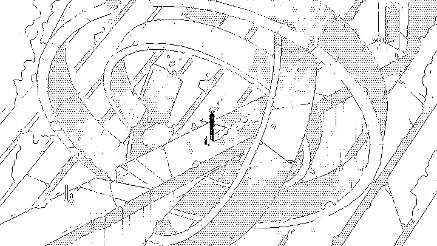

Daily photographs from the inhabited ages of Dinaisth.

After its rescue from the Vetetrandes ruins, the compressor arrives in Whiinders.
Architects of the ancient bridge connected our two societies by cutting across the ancient astrolab.
Deep in my dream the great bird whispered queerly
Of the black cone amid the polar waste;
Pushing above the ice-sheet lone and drearly,
By storm-crazed aeons battered and defaced.
— H. P. Lovecraft

We have finally received the stabilizers from the builder districts.
And walk among long dappled grass,
And pluck till time and times are done
The silver apples of the moon,
The golden apples of the sun.
— Ray Bradbury


I wander

Drawn in Noodle | Cropped in Moogle
Devine Lu Linvega Inktober 2019